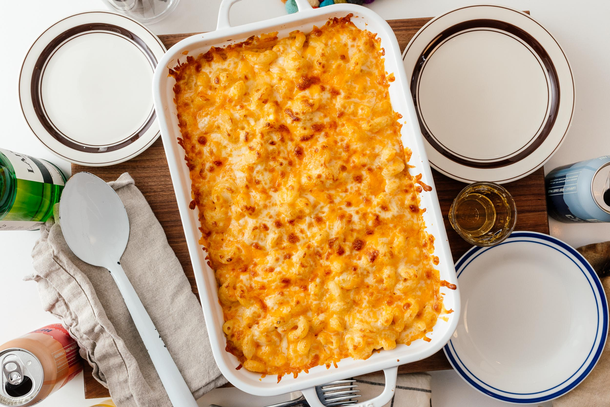

How to make Mac and cheese

This is a recipe on how to make Mac and Cheese. Mac and cheese is an easy to make delicous recipe that both adults and kid alike enjoy.
Ingredients
- 1/2 package of elbow macaroni
- 2 cups of milk
- 2 tablespoons of butter
- 2 tablespoons of all purpose flour
- 1/2 teaspoon salt
- 1/4 teaspoon black pepper
- 1 block of sharp cheddar shredded
- 1/4 teaspoon ground red pepper
Instructions
- Preheat the oven to 400f, boil your pasta and grease a 2qt baking dish.
- Microwave your milk for 1 1/2 minutes. Melt your butter in a skillet over medium heat; whisk in the flower until smooth.
- Gradually whisk in the warm milk until thickened.
- Whisk in the salt, black pepper, 1 cup of cheese and red pepper until smooth.
- Stir in your cooked pasta. Pur the pasta mix into your baking dish then top with your remaining cheese.
- Bake for 20 minutes or until golden and bubbly.